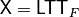
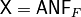
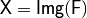
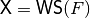
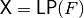
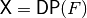
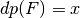
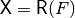

| SYNTAX |
DESCRIPTION |
void TT(NTL::mat_GF2& X, VBF& F) |
 |
void getHexTT(ostream& s) |
s is the hexadecimal representation of the truth table of F |
NTL::vec_long getDecTT() const |
Decimal representation of the truth table |
long weight(VBF& F) |
Weight of F |
void LTT(NTL::mat_GF2& X, VBF& F) |
 |
void CTT(NTL::mat_ZZ& X, VBF& F) |
 |
void Trace(GF2EX& f, VBF& F) |
F has a trace representation defined by f |
void Pol(NTL_SNS ostream& s, VBF& F) |
s contains the Polynomials in ANF of F |
void ANF(NTL::mat_GF2& X, VBF& F) |
 |
void Charact(NTL::mat_ZZ& X, VBF& F) |
 |
void Walsh(NTL::mat_ZZ& X, VBF& F) |
 |
void LAT(NTL::mat_ZZ& X, VBF& F) |
 |
void lp(NTL::RR& x, VBF& F) |
 |
void linear(NTL_SNS ostream& s, VBF& F, ZZ& x) |
Linear relations associated with the value x of the Linear Profile of F |
void ProbLin(NTL::RR& x, VBF& F, NTL::ZZ& w) |
Probability of Linear relations associated with the value w of the Linear Profile of F |
void DAT(NTL::mat_ZZ& X, VBF& F) |
 |
void dp(NTL::RR& x, VBF& F) |
 |
void differential(NTL_SNS ostream& s, VBF& F, ZZ& x) |
Differential relations associated with the value x of the Differential Profile of F |
void ProbDif(NTL::RR& x, VBF& F, NTL::ZZ& w) |
Probability of characteristics associated with the value w of the Differential Profile of F |
void AC(NTL::mat_ZZ& X, VBF& F) |
 |
NTL::mat_GF2 LS(VBF& F) |
Returns a matrix whose rows are the linear structures |
void printFWH(NTL_SNS ostream& s, VBF& F) |
Frequency distribution of the absolute values of the Walsh Spectrum |
void printFAC(NTL_SNS ostream& s, VBF& F) |
Frequency distribution of the absolute values of the Autocorrelation Spectrum |
void Cycle(NTL::vec_ZZ& v, VBF& F) |
 is the Cycle Structure is the Cycle Structure |
void printCycle(NTL_SNS ostream& s, VBF& F) |
Print Cycle Structure |
NTL::mat_GF2 fixedpoints(VBF& F) |
Return fixed points |
NTL::mat_GF2 negatedfixedpoints(VBF& F) |
Return negated fixed points |
void PER(NTL::vec_ZZ& v, VBF& F) |
is the permutation vector defined by F |